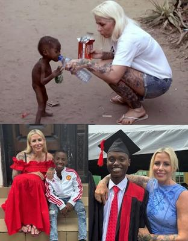

Hace algunos años se hizo viral la foto de un niño africano en condiciones extremas: esquelético, desnudo, al que, mientras mendigaba por comida en las calles, una mujer europea le da de beber agua de una botella. Esto ocurrió el 30 de enero de 2016 en Akwa Ibom, uno de los estados de Nigeria, y a partir de entonces, la vida de aquel niño cambiaría para siempre.


Había sido abandonado por su familia acusado de ser un «brujo». La mujer era Anja Ringgren Lovén, joven danesa que se encontraba trabajando en la zona como voluntaria, tras motivarse al ver en su país documentales sobre casos como éste, de niños en África afectados por supersticiones.
Resulta que en Nigeria, el fenómeno de los «niños brujos» (también conocidos como skolombo o escolombos) es una tragedia humanitaria que ha dejado a miles de menores en la calle. Se les culpa, como si fueran chivos expiatorios, de producir enfermedades, muertes repentinas de familiares, y hasta de la pérdida de empleo de sus padres. Además de que muchas familias utilizan esa acusación como una «excusa social», para abandonar a hijos que no pueden alimentar debido a la pobreza… Y también se usa este procedimiento para resolver disputas de herencia o tensiones entre parientes, señalando a un niño para «cristalizar» el conflicto. Son creencias que persisten en regiones como Akwa Ibom y Cross River.
Algún tiempo después de aquella foto viral de Anja, circulaban por las redes sociales otras donde se la veía con el niño ya más grande, bien alimentado y bien vestido. Completamente irreconocible. Y más recientemente, otra fotografía muestra a un adolescente vestido de toga y birrete, siendo abrazado por Anja. Otras fotos y publicaciones de Anja muestran el progreso académico de aquel joven rescatado de la miseria. Ella decidió hacerse responsable de él.
¿Pero por qué el caso de estos niños no suele ser señalado y combatido por esos grupos cristianos que se aprovechan de situaciones como éstas para introducir sus dogmas? ¿Y por qué Anja no es resaltada como un modelo cristiano de amor al prójimo?
Aunque parezca paradójico, el sufrimiento de los supuestos «niños brujos» más bien se ha intensificado por la influencia de predicadores evangélicos y pentecostales, autoproclamados profetas, especialmente en la región del Delta del Níger, quienes han capitalizado la tragedia cobrando a las familias costosos «exorcismos» para «limpiar» a los niños mediante rituales violentos, que incluyen obligarlos a beber líquidos extraños o quemar su ropa, y que en casos extremos, a algunos les ha costado la vida.
Los niños acusados suelen ser golpeados, torturados, quemados con ácido, o incluso sacrificados ritualmente. Lamentablemente muchos niños han fallecido o han quedado con secuelas graves, y quienes logran sobrevivir al ataque inicial, tienen que enfrentar después peligros mortales en la calle, como la malaria y la desnutrición extrema. Se estima que sólo en ciudades como Calabar, viven cerca de 20.000 niños en la calle que fueron rechazados por este motivo. Y a nivel nacional, organizaciones laicas de ayuda calculan que decenas de miles de menores sufren esta estigmatización cada año.
¿Y Anja por qué no es resaltada en las iglesias como un ejemplo de caridad cristiana? —Porque hay un pequeño inconveniente: Anja no es ninguna cristiana practicante. Ella es originaria de Dinamarca, uno de los países más seculares del mundo, donde, aunque formalmente muchos ciudadanos están registrados en la iglesia estatal —la Iglesia Nacional Evangélica Luterana conocida como Folkekirken—, menos del 10% de la población asiste regularmente a servicios religiosos. Es más bien, una sociedad donde la moral no depende de textos sagrados, sino de consensos humanos, educación y bienestar social.
Anja no es conocida como predicadora o misionera. No llegó al África a «salvar almas», sino a salvar vidas. Porque su motivación no fue religiosa, sino ética. Y ese detalle es crucial. Sin embargo, es una mujer que dio una lección de amor al mundo entero, y en especial a los comerciantes de la fe que sólo ofrecen oraciones y soluciones para después de la muerte.
Anja rescató a aquel niño hambriento de la calle, lo llevó a un hospital, financió su tratamiento, y le puso el nombre simbólico de Hope (Esperanza). No existe confirmación pública sólida de que lo haya adoptado formalmente. Pero eso es, en muchos sentidos, irrelevante, ya que ella lo salvó, lo cuidó y lo crio. En la práctica, Anja es la madre de Hope, no por decreto jurídico, sino por responsabilidad asumida. Y aunque algunos interpretaron esto como una especie de «milagro», no hubo en realidad ninguna intervención divina, ni ángeles, ni oraciones cumplidas. Hubo algo mucho más escaso y más valioso: empatía humana sin dogmas, libre de dioses.
En un contexto donde tantas organizaciones humanitarias operan bajo banderas religiosas, el caso de Anja destaca precisamente por lo contrario: no necesitó ninguna fe dogmática para hacer el bien. Cuando encontró al niño, éste llevaba meses sobreviviendo en la calle, desnutrido, enfermo, abandonado por sus propios padres, y señalado como causante de desgracias familiares. Su «crimen»: existir en una comunidad donde la superstición tiene más peso que la evidencia. Donde el pensamiento mágico-religioso prevalece sobre el pensamiento crítico.
Pero Anja no se conformó con ayudar a un solo niño. Junto a su pareja, el nigeriano David Emmanuel Umem, fundó la organización DINNødhjælp (African Children’s Aid Education and Development Foundation, Fundación Africana de Ayuda a la Infancia, Educación y Desarrollo), que tiene las funciones de rescatar niños acusados de brujería, proveerles atención médica urgente, ofrecerles refugio seguro, garantizar su educación, y combatir activamente las creencias que justifican estos abusos. Obviamente, no es una misión evangelizadora, sino más bien una operación de emergencia contra el daño causado por creencias irracionales.
Actualmente existen otras organizaciones también laicas, como la Child’s Right And Rehabilitation Network (CRARN), que trabajan rescatando a estos niños del abandono en vertederos y calles peligrosas.
Anja y Hope viven principalmente en Nigeria, donde se encuentra el centro que dirige su organización. Allí creció Hope, rodeado de otros niños rescatados de situaciones similares. Gracias a esto hoy está sano, ha recibido educación, y se graduó de secundaria recientemente, llevando una vida que hace diez años habría sido impensable. Su transformación no es ningún «testimonio de fe». Es un testimonio de intervención humana directa.
Quizás lo más irónico es que en una sociedad profundamente religiosa un niño puede ser condenado por creencias «espirituales». Mientras que una mujer proveniente de una sociedad secular, decidió actuar sin esperar aprobación divina. El contraste es difícil de ignorar: la superstición lo condenó, pero la razón y la empatía lo salvaron.
Un verdadero Salvador no promete redenciones invisibles ni soluciones a males imaginarios; actúa donde el sufrimiento es real. Anja Ringgren Lovén no habló de «salvación espiritual» ni ofreció goces eternos en «otro mundo»: dio agua, alimento, atención médica y un hogar a un niño condenado por la superstición. En contraste, figuras míticas son adoradas hoy por millones, por ofrecer liberación de males intangibles, mientras el dolor concreto sigue esperando manos humanas. La diferencia es clara: uno transforma vidas con hechos verificables; el otro con promesas que no se pueden comprobar.
La historia de Hope no es un «milagro» que pueda ser usado en el proselitismo religioso. Es algo más incómodo, y a la vez más esperanzador: se trata simplemente de que no necesitamos dioses para hacer el bien, pero sí necesitamos cuestionar creencias que hacen daño. Porque mientras existan comunidades que culpan a niños por algo como «pecado», «espíritus inmundos» o «mala suerte», seguirán existiendo más «Hope»… esperando que alguien, sin supersticiones ni dioses, decida rescatarlos.
[Godless Freeman]
https://www.dw.com/es/a-la-caza-de-los-ni%C3%B1os-brujos-de-nigeria/a-63793106
https://www.youtube.com/watch?v=UT_-ybMXgGU&t=15
Comentarios
Comments powered by Disqus